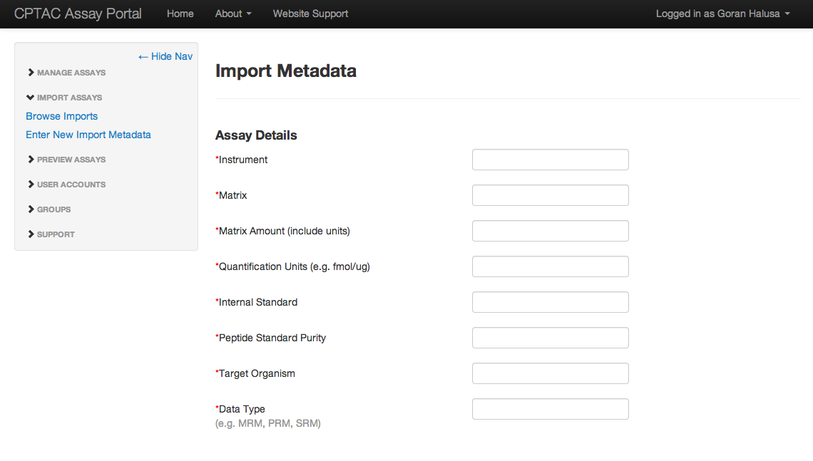
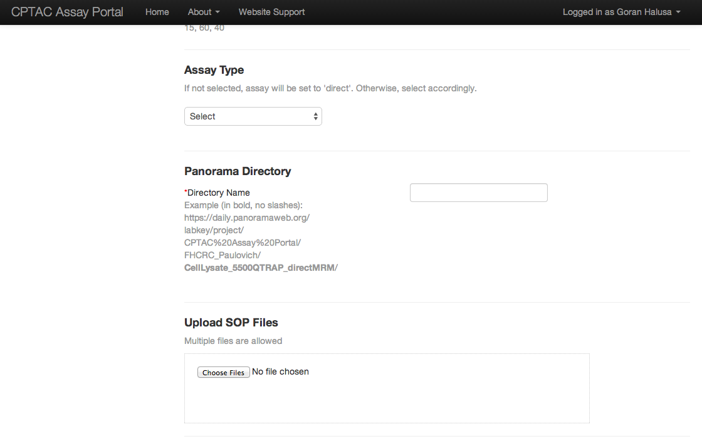
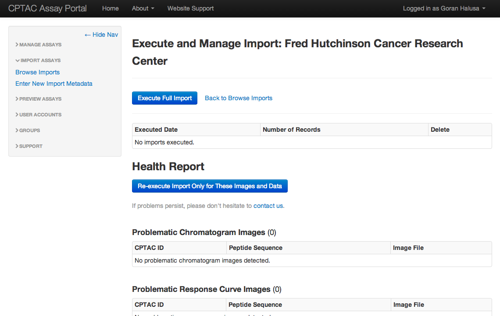
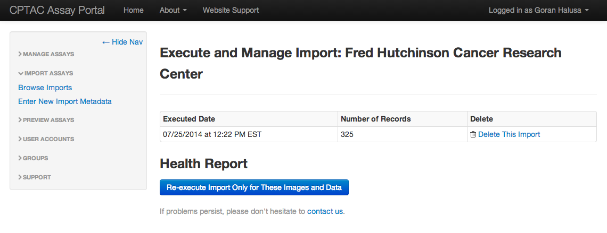
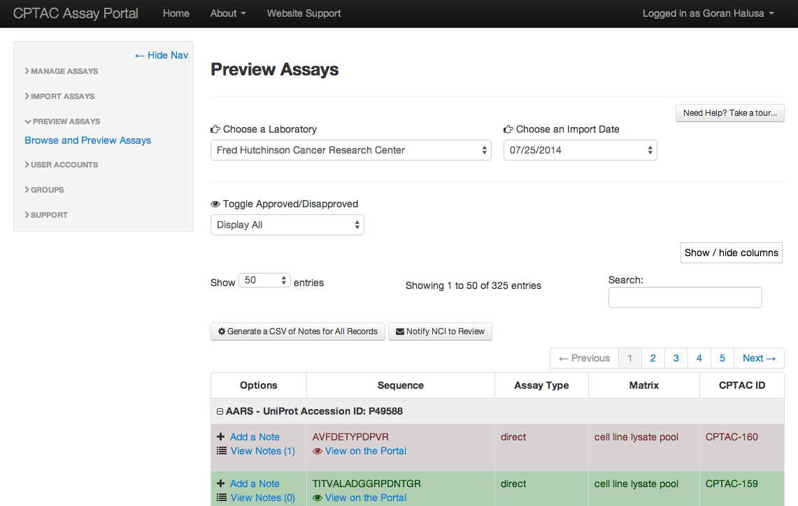
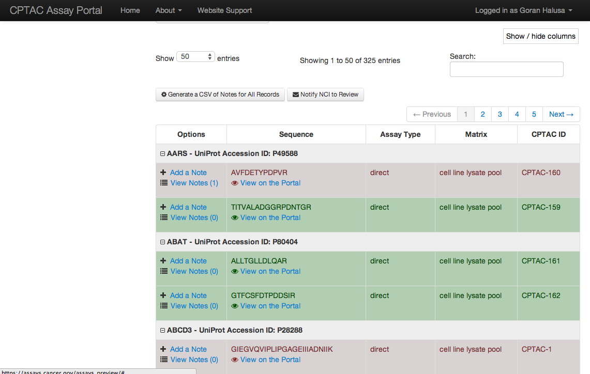
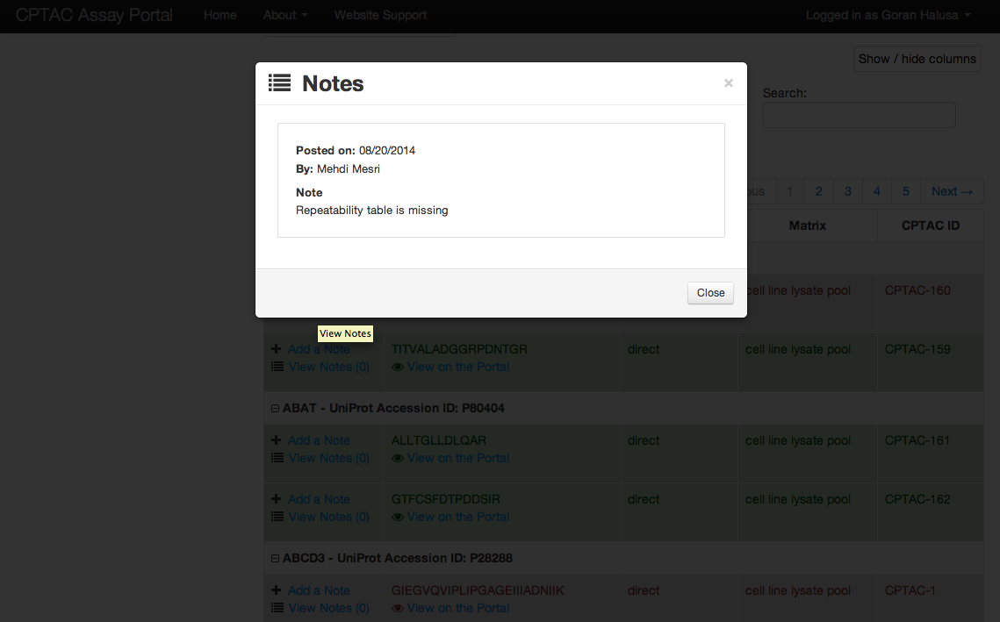

This is the first step, and needs to be completed before executing the import. The information entered in this interface can be revisisted and modified at any time.
The 'Panorama Directory' field is only field which should not be modified, unless the directory has changed out on Panorama.
From here, imports can be executed. If there are any issues after the initial import has been executed, the "Health Report" section is populated with any problematic data and imagery. Problematic data and imagery occur due to sporatic performance issues with Panorama's API. To attempt to fix issues, the ability to re-execute the import against the problematic images and data has been integrated. It may take 2-3 runs to fix all existing issues. If issues persist, a support ticket can and should be submitted.
If the import is problematic, and all options have been exhausted, it can be completely deleted, without affecting other existing data on the Assay Portal. In other words, if data is wrong out on Panorama, the issues should first be fixed there. It is not possible to "edit" or "modify" any imported data on the Assay Portal, aside from the Metadata.
After the import has been successfully executed, assays can be previewed as they would appear on the Portal. These assays are not public until the NCI Assay Review Team has marked them as approved.
The status of assays are depicted by color-coded rows. A row in red means it is disapproved, while a row in green means it has been approved. If a row is neither red nor green, it means it hasn't been reviewed by the NCI Assay Review Team.
Notes can be added by both Laboratories and the NCI Assay Review Team. This provides the means to communicate on individual assays, during the review process.
Last modified on August 22, 2014. Prepared by Goran Halusa, Leidos Biomedical Research, Inc.